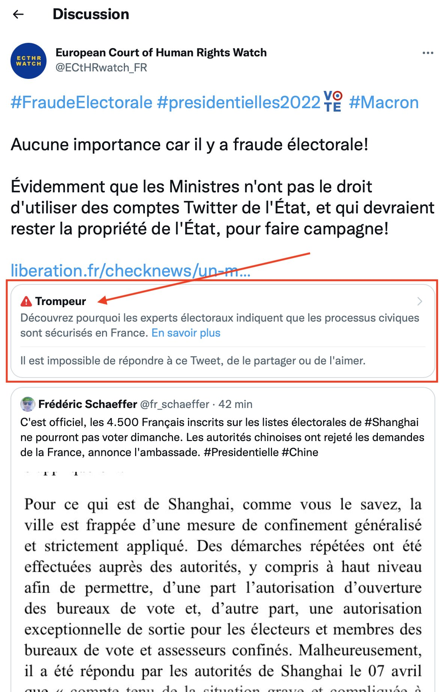

WOW : Twitter qualifie de « trompeur » mon tweet véridique sur la fraude électorale française
1512335396834881540 Le texte du tweet ci-dessous est la publication originale de Vincent Le Corre sur X, en anglais, reproduite telle quelle ; le texte de présentation qui l’entoure a été traduit automatiquement par une intelligence artificielle (Claude Code), sans relecture humaine, et peut contenir des erreurs. En cas de divergence, la version anglaise fait foi. Cliquez ici pour lire la version originale en anglais
WOW, one of my tweet about electoral fraud in France, tweet which is truthful, has just been tagged by @twitter has misleading. Unbelievable! @USAmbFrance, @USAmbChina (@FBI field office Beijing is the closest from where I live, cc @MahonriManjarr1), the @FBI must investigate!
Traduction française du tweet : « Incroyable, l’un de mes tweets sur la fraude électorale en France, un tweet véridique, vient d’être signalé comme trompeur par @twitter. Inimaginable ! @USAmbFrance, @USAmbChina (le bureau du @FBI à Pékin est le plus proche de mon domicile, cc @MahonriManjarr1), le @FBI doit enquêter ! »
Publié le 8 avril 2022 à 15 h 43 min 51 s (heure normale de Chine, GMT+8). La capture d’écran jointe au tweet montre la publication signalée par Twitter : elle était rédigée en français sur le compte francophone @ECtHRwatch_FR, et porte la mention « Trompeur », les réponses, partages et « j’aime » ayant été désactivés. Cliquez sur l’image pour l’ouvrir en taille réelle.
